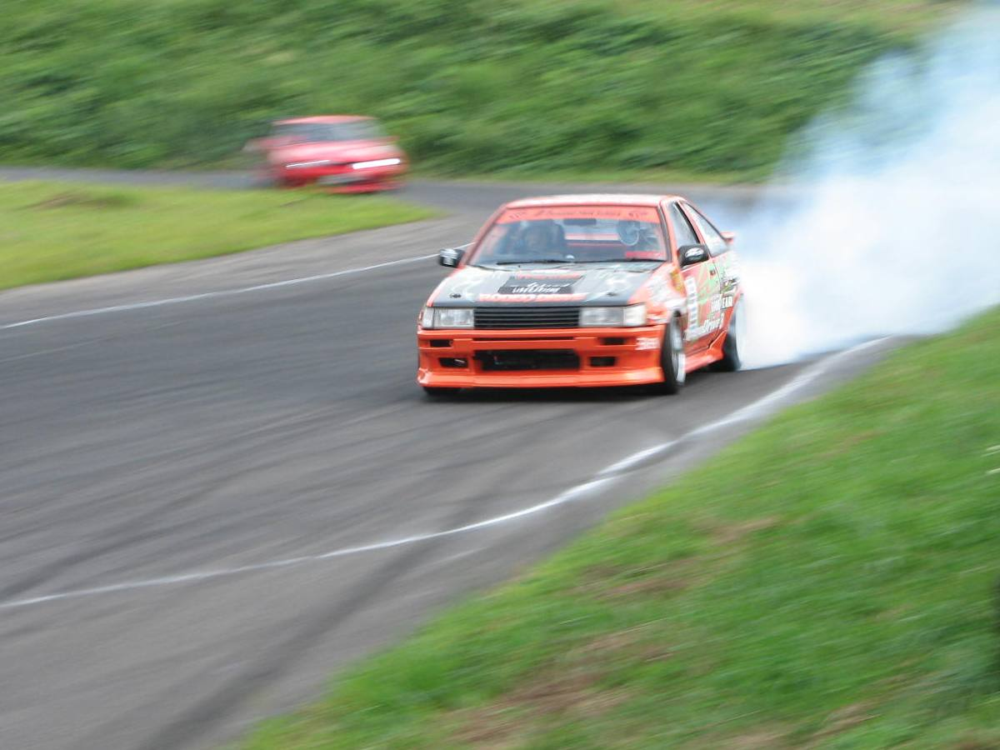

The 1983 Toyota Sprinter Trueno AE86 left the factory as a lightweight, economical Japanese coupe. It was neither fast nor luxurious. But drivers on mountain passes discovered that its rear-wheel-drive layout, natural chassis balance, and modest power made it uniquely controllable beyond the limits of traction.
Rather than modifying a car to grip the road faster, drift culture modified it to slide with sustained momentum and angle. Suspensions were stiffened, steering angles widened, and mechanical limited-slip differentials installed—reorienting the car’s entire mechanical objective from transit to dynamic expression.
Explore the Build Close the Build
FROM THE DATASET
The car left the factory as a relatively ordinary production coupe. Over time, people gave cars like the AE86 a different identity through drifting, modification, competition, and enthusiast culture.
THEN THE OWNER CHANGED IT
FACTORY
MODIFIED
The owner replaced the factory 1.6L unit with a 1.8-litre 7A-GE built by specialist shop Tec-Art’s, using a 7A block, 20-valve cylinder head, Toda Racing camshafts (272° in / 288° ex), Toda valves and springs, and a TRD custom exhaust. The builder documented that this was tuned for linear throttle control and mid-range response on mountain passes rather than sheer peak horsepower.
The owner changed the drivetrain to close-ratio gearing for first through third, a short-shift lever kit, and a TRD two-way limited-slip differential with a 4.778 final drive to withstand aggressive clutch-kicking and keep the engine in its optimal torque band during slides.
The previous coilover setup was replaced by a custom in-house suspension designed by Tec-Art’s specifically to tighten body control and reward precise weight transfer while actively punishing driver errors.
The unibody received 3,500 spot welds and 22 additional reinforcement points to handle drifting stresses without flexing, paired with a lightweight green carbon-fibre bonnet, Zenki front lip, and TRD boot spoiler.
The owner chose 15-inch Work Meister wheels to preserve period-authentic Japanese proportions rather than fitting oversized modern diameters.
The project dataset captures what this car was when it left the factory: an economical, lightweight Japanese coupe. But this particular documented build—Keiichi Tsuchiya’s personal Trueno, developed and maintained by Japanese AE86 specialist Tec-Art’s—shows how an owner reoriented that starting point around a completely different mechanical purpose.
Source: One documented example detailed by NZ Performance Car, “High expectations — Dorikin’s 86” (11 January 2015).